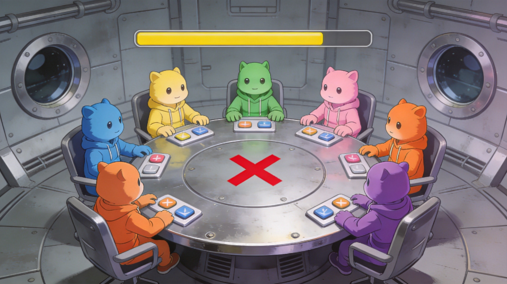

Introduction
Amogus.io is a browser‑based multiplayer arena that fuses the social deduction chaos of Among Us with the territory‑capture gameplay of Paper.io. Each player controls an impostor or crewmember avatar that leaves a permanent colored trail as it moves. The goal is to expand your personal zone by drawing a closed outline and returning to your safe area, while cutting rivals’ trails to eliminate them. The mash‑up creates a constantly tense fight for map dominance, where a single broken line can mean instant death. Players love the simple controls, the rapid‑fire decision‑making, and the satisfying visual of watching the whole map turn their color. The game’s quick matches and cross‑platform accessibility make it an addictive playground for both casual and competitive gamers.
Getting Started

Getting started in Amogus.io is straightforward. Open https://amogus.io in any modern browser and click the “Play” button to enter a live match. You control your character with the mouse: moving the cursor steers the impostor or crewmember. If you prefer keyboard input, use WASD or the Arrow keys for the same effect. As soon as the round begins you spawn inside a small safe zone that is already colored in your hue. Move out of this zone to begin drawing a trail behind you. To claim new territory, trace a closed loop and return to your safe zone; the interior will fill with your color and add to your percentage on the scoreboard. Watch out for enemy trails—they appear as semi‑transparent lines. If an opponent cuts your trail before you finish the loop, you lose immediately. Conversely, striking an opponent’s trail while it’s incomplete eliminates them. Keep an eye on the top‑right panel to see the current percentage each player controls, and aim to surpass 50 % to climb the leaderboard. Practice a few low‑risk loops in the early seconds of a match to get a feel for turning speed and trail length before attempting larger, riskier expansions.
Basic Tips
Start Small, Expand Gradually – Stay inside your safe zone for the first seconds. Draw a tiny loop just outside your base, return, and watch the area fill. This gives you a buffer before you risk longer paths. Close Loops Immediately – As soon as you finish a line that completes a shape, turn back toward your safe zone right away. Leaving a trail open even for a moment lets rivals cross it and eliminate you. Scan the Map for Dense Trails – The top‑right scoreboard shows percentages, but visual awareness matters. If you see a cluster of semi‑transparent enemy lines, steer away to avoid accidental collisions. Target Low‑Percentage Players First – It’s safer to cut a player with only 4 % than chase the leader. Eliminate them, capture their area, and boost your share without major risk. Keep Your Trail Short When Threatened – If an opponent is close, don’t extend your line further. Cutting your trail short reduces the area an enemy can hit and lets you retreat safely.
Advanced Strategies
1. Territory Denial – In busy sectors, actively hunt semi‑transparent enemy trails. If you spot a rival drawing a loop near a choke point, slide your character to intersect the unfinished line just before they return to their base. This eliminates them and reclaims the area they would have captured, keeping your percentage ahead. 2. Controlled Trail Length – Adjust the size of your loops based on proximity of threats. When an opponent is within two grid squares, make a short 90‑degree turn and close the loop immediately. When the map is clear, extend the path to capture larger chunks, maximizing growth without unnecessary risk. 3. Split‑Path Expansion – Launch two separate trails on opposite sides of the map. Begin a loop on the left edge, then quickly dart to the right side and start another. Opponents must defend both fronts, diluting their ability to cut either trail and giving you a chance to finish both safely. 4. Predictive Interception – Watch how rivals habitually turn (e.g., always right after crossing a diagonal). Position yourself in the projected line of that turn; when they cross your trail, they will be eliminated instantly, turning a defensive move into an aggressive kill.
Pro Tips
Blink‑Acceleration – Flick the mouse a few pixels forward to surge ahead, slipping past an opponent’s trail before they react. Geometric Trapping – Hug a wall with your trail, then close the loop so the interior includes the wall. Opponents cutting that wall collide with the boundary, often eliminating themselves. Pattern Adaptation – After a few eliminations, note which players always turn left after a diagonal. Adjust your path to intersect that turn point, turning a retreat into a lethal counterattack. Mental Heat Map – Continually visualize trail density. High‑density clusters are death traps; steer toward low‑traffic corridors to expand safely while opponents fight over the crowded zones.
🎮 Controls & Mechanics Deep Dive
Before you can dominate the leaderboard, you need to understand exactly how your little amogus moves and interacts with the world. The mechanics in Amogus.io might look simple on the surface, but the underlying physics are what separate the casual players from the absolute sweats.
At its core, you’re controlling the "head" of your character. This head has a very specific, unforgiving hitbox. If your head clips any solid line—whether it’s your own trail, an enemy’s trail, or the border of your enclosed safe zone—you instantly die. The trail you leave behind isn't just a visual effect; it acts as a solid physical wall the moment it's drawn.
- Movement & Turning Radius: You can’t make instant 90-degree turns. Your amogus has a slight drift and a defined turning radius. If you try to pivot too sharply to dodge an incoming enemy, you’ll likely clip your own trail. Always anticipate your turns and start arcing early.
- Acceleration & Momentum: You don't start at max speed. There’s a brief acceleration phase when you spawn or respawn. Use this split-second to adjust your angle before you hit top speed and commit to a path.
- Scoring System: Your score is strictly tied to the percentage of the total map you’ve enclosed. However, the game also rewards aggressive plays. Cutting an enemy’s trail while they are outside their safe zone wipes out their accumulated territory and adds a massive chunk of it to your own score.
- Trail Vulnerability: While your head is your weak point, your trail is your weapon. It takes a fraction of a second for a newly drawn line to become "solid" to others, but to you, it's instantly lethal. Keep this micro-timing in mind when trying to trap someone.
Mastering the keyboard (WASD or Arrow keys) is generally preferred over mouse controls because it allows for much tighter, more predictable micro-adjustments when you're trying to thread the needle through a tiny gap in an enemy's defense.
🎯 Game Modes Breakdown
Amogus.io isn't just a single chaotic free-for-all. Depending on the server you join, you'll experience different rulesets that completely change how you should approach the match. Here’s a breakdown of what you’ll face.
Free-For-All (FFA)
This is the classic, pure-chaos mode. Usually packed with 10 to 15 players, the only rule is survival. Everyone is out for themselves. The map gets cluttered incredibly fast, creating a massive spaghetti bowl of colored lines. In FFA, patience is your best friend. Let the other players tangle each other up and wipe each other out while you quietly scoop up territory on the edges.
Team Mode
Split into two or more factions (like Red Crew vs. Blue Impostors), this mode requires actual coordination. You cannot cross your own team's trails, but you can freely cut your enemies' lines. The strategy here shifts from pure survival to playing as a unit. If your teammate is drawing a massive, risky outline to capture the center of the map, your job is to play defensively around them, cutting off anyone trying to snipe their trail.
Battle Royale (Zone Mode)
This mode adds a shrinking play area to the mix. A toxic zone slowly closes in from the edges of the map, forcing everyone into a tighter and tighter space. This completely destroys the "edge-camping" strategy. You have to be aggressive and fight for the center early. As the map shrinks, trails get denser, and a single mistake usually means instant elimination. It’s high-octane and perfect for quick, intense matches.
Practice / Private Rooms
If you're just trying to get a feel for the turning radius or want to mess around with friends, private rooms are the way to go. You can tweak the map size, player limits, and even the game speed. It’s the perfect sandbox to practice those tight U-turns without the pressure of a ranked leaderboard staring back at you.
🚀 Advanced Strategies & Pro Tips
Once you’ve got the basics down and you're consistently surviving past the first two minutes, it’s time to get a little sweaty. These advanced techniques will help you outplay opponents who might have faster reflexes but less game sense.
The "Bait and Switch" Trap
Start drawing a long, seemingly reckless trail directly toward an enemy. They’ll naturally try to cut you off. Right before they reach your line, execute a tight, pre-planned U-turn. Because they committed to crossing your path, they’ll end up trapping themselves inside the small pocket you just created, allowing you to safely cut their trail from the outside.
Endgame Targeting
In the final moments of a match, you’ll often see one player who has captured 60% or more of the map. Do not attack their main body. Their safe zone is massive, and their trails are heavily guarded. Instead, look for the thin, desperate little lines they are throwing out to grab that last 2% of territory. Snipe those thin edges. It’s much safer, and stripping away their trailing extensions can frustrate them into making a sloppy mistake.
The "Trojan Horse" Escape
Sometimes you’ll get trapped inside an enemy’s newly enclosed zone. Don’t panic. If you have a tiny sliver of space, start drawing a very tight, microscopic spiral. The enemy will see your trail and try to cut it, but if your loops are tight enough, they’ll clip their own trail trying to get to you. You can often bait them into self-eliminating just by panicking them with tight geometry.
Map Awareness & Audio Cues
Stop staring directly at your amogus. Your eyes should be focused about three screen-widths ahead of your character. You need to see the intersections forming before you get there. Additionally, if the game features audio cues for line-cutting, use them. Hearing a snipe happen off-screen tells you exactly where a player just died and where their massive unclaimed territory is up for grabs.
❓ Frequently Asked Questions
Is Amogus.io completely free to play?
Yes, 100% free. It’s a browser-based .io game, so there are no upfront costs, no subscriptions, and no pay-to-win mechanics. You might see some optional cosmetic skins or ad-supported boosts depending on the specific portal you play on, but the core gameplay is entirely free.
Can I play Amogus.io on my phone or tablet?
You can! The game is built with HTML5 and supports mobile browsers. However, it uses virtual joysticks or touch-and-drag mechanics on mobile. While it’s totally playable, the lack of physical buttons makes the tight turning radius much harder to control. If you want to hit the top of the leaderboard, we highly recommend playing on a PC with a keyboard.
How do I play with my friends?
Look for the "Create Private Room" or "Play with Friends" button on the main menu. You can set up a custom lobby and share the unique room link or code with your squad. This is also the best way to practice new strategies without randoms ruining the vibe.
What are the system requirements?
If your device can run a modern web browser like Chrome, Firefox, or Edge, you can play Amogus.io. The game is incredibly well-optimized. You don’t need a dedicated graphics card or a high-end processor. Even a basic laptop or an older Chromebook will run it at a smooth 60 FPS.
I keep dying to my own trail. How do I stop doing that?
This is the most common beginner mistake! You’re likely trying to make sharp, 90-degree turns at full speed. Remember the turning radius mechanic we mentioned earlier. You need to start your turns much earlier and use wide, sweeping arcs. Head over to a private practice room and just spend ten minutes drawing figure-eights and tight circles to build muscle memory. It’ll feel weird at first, but your survival rate will skyrocket.
Conclusion
Amogus.io delivers a fresh twist on territory‑capture games by blending the iconic characters of Among Us with Paper.io’s strategic outline mechanic. Master the basics, employ smart trail management, and you’ll quickly climb the leaderboard. Whether you’re a casual player or a seasoned strategist, the fast‑paced matches provide endless replayability. Jump into a browser, claim your zone, and prove you’re the ultimate impostor on the map!